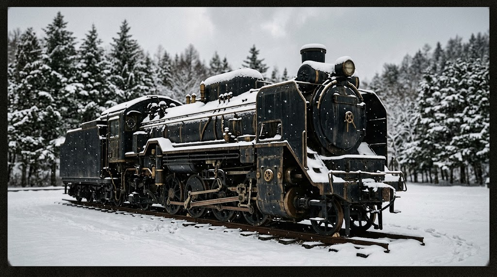
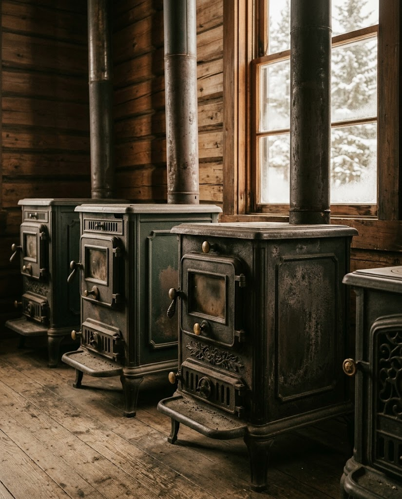
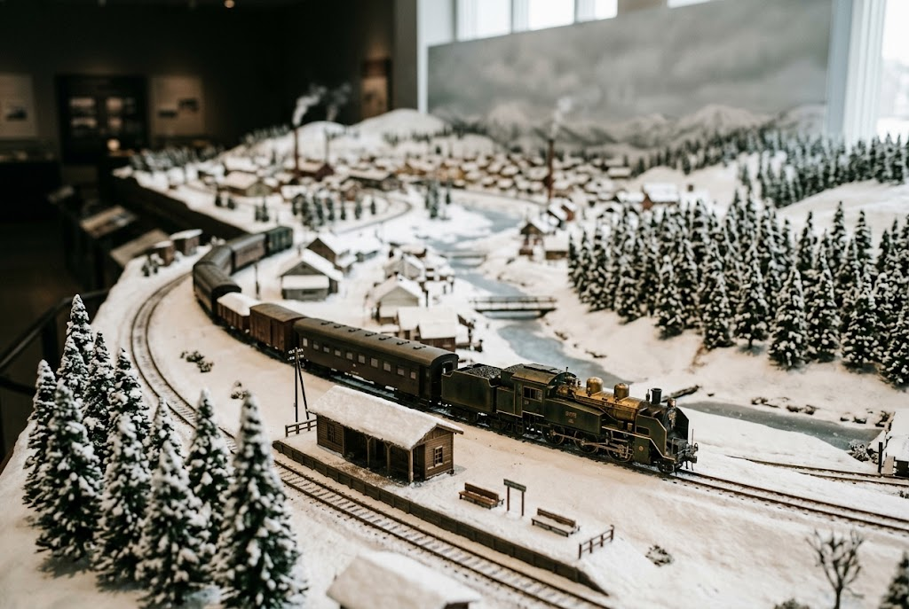
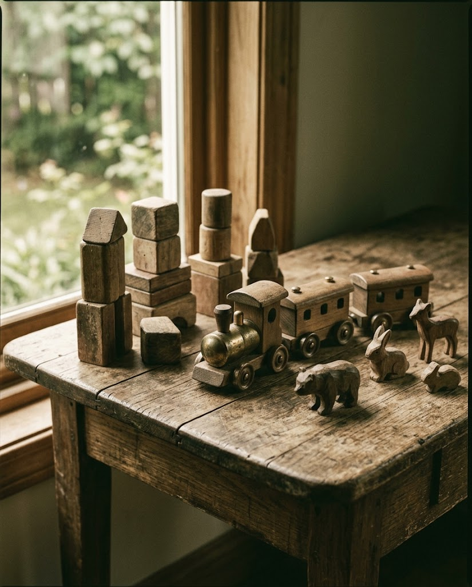

屋外の蒸気機関車
館の外に佇むSLは、間近で見上げるほどの迫力。ツーリングの途中に立ち寄った方も圧倒されたと語ります。

雪国のくらしと、蒸気機関車の記憶。
金田一豊がキマロキ(蒸気機関車)の資料を集め、2005年に博物館を開館させました。
雪国の厳しいくらしを物語るストーブの数々、細部まで再現された建物の展示、そして館の外で迫力を放つSL。ここには、北国で積み重ねられてきた時間が静かに並んでいます。
2005年 開館
来館者の声から、特に心に残る展示をご紹介します。
館の外に佇むSLは、間近で見上げるほどの迫力。ツーリングの途中に立ち寄った方も圧倒されたと語ります。

宗谷線を中心に、北海道の車両が走る鉄道模型。見応えのある展示として好評です。

プラスチック製品がほとんどとなったおもちゃの時代に、長く愛用できる木のおもちゃのよさを伝えています。
キマロキイベントにちなんでミニ新幹線やキッチンカーなどが来てました!中は有料施設以外は無料で開放されてるってすごいですね!鉄道模型には圧巻でした。車両も宗谷線中心として北海道の車両が入ってたのが良いですね。ハンバーガーはめちゃくちゃ美味かった!パンのお土産も好評で、キマロキをイメージした黒いパンがよかったです。このようなイベントをちょこちょこやってくれたらまた行きたいです!
ツーリングの途中で訪問。雪国の厳しい生活がよくわかります。ストーブの数々は見ものです。昔の石炭いれて使うストーブは風情があっていいですね。建物の展示で壁の中の断熱材の再現が細かくてびっくりしました。特筆すべきは外のSLです!これはすごい迫力です!!
| 施設名 | 名寄市北国博物館 |
|---|---|
| 住所 | 名寄市字緑丘222番地 |
| 定休日 | 毎週月曜日、年末年始 |
| 電話番号 | 01654-3-2575 |
| メール | ny-kitahaku@city.nayoro.lg.jp |
| 公式サイト | http://www.city.nayoro.lg.jp/section/museum/index.html |